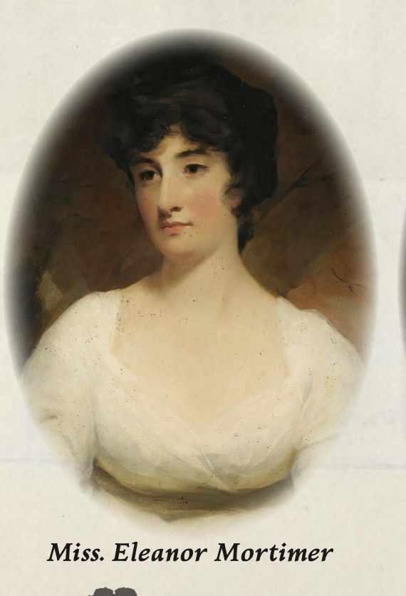

Miss Eleanor Mortimer Draft
Physical Description
A softly spoken woman of impeccable etiquette and composed bearing, with an inner steel that reveals itself in moments of pressure. Sensible, pragmatic, and calculating beneath her genteel exterior.
Background
Eleanor Mortimer is Henry’s sister and his closest confidant in the conspiracy surrounding Charlotte’s ghoul curse. She helps maintain the facade of Charlotte’s death and manages the household’s public face. Pragmatic and calculating, Eleanor befriended the investigator Marina Garrick specifically to lure her into serving as a vessel for the curse-transfer ritual. She dislikes Dr. Beamish and his methods but tolerates his involvement as a necessary evil for her brother’s sake.
Stat Block
Characteristics
| STR | CON | SIZ | DEX | INT | POW | APP | EDU |
|---|---|---|---|---|---|---|---|
| 50 | 40 | 50 | 65 | 65 | 70 | 55 | 55 |
- HP: 9 | SAN: 60 | MP: 14
- DB: 0 | Build: 0 | Move: 8
Combat
| Attack | Skill | Damage |
|---|---|---|
| Brawl | 25% (12/5) | 1D3 |
| Dodge | 35% (17/7) | — |
Skills
Art/Craft (Embroidery) 60%, Credit Rating 50%, Etiquette 65%, History 55%, Language (English) 60%, Language (French) 30%, Language (Greek) 20%, Listen 60%, Persuade 60%, Reassure 50%, Religion 30%, Spot Hidden 70%
Connections
- Location: The Vicarage, Osney Grange, Hampshire
- Associates: Rev_Henry_Mortimer, Mrs_Charlotte_Mortimer, Dr_Thornton_Beamish
Campaign History
- Chapter 0.1 — Curate & Curability: Befriended Marina_Garrick in Brighton and lured her to Osney_Grange as a ritual vessel. During Marina’s escape from the dinner table, Marina kicked Eleanor in the jaw hard enough to break it, knocking her out of the fight. Eleanor died from the injury on the dining room floor.
Relationships
- Sibling Rev Henry Mortimer — Close confidant. Helps Henry maintain the facade of Charlotte's death.
- Family Mrs Charlotte Mortimer — Sister-in-law. Complicit in the cover-up of Charlotte's condition.
- Associate Dr Thornton Beamish — Mutual dislike. Eleanor distrusts Beamish and his methods.
- Social Marina Garrick — Befriended Marina to lure her as a vessel for the curse-transfer ritual.